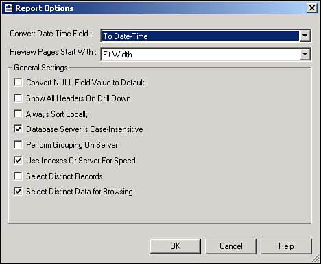
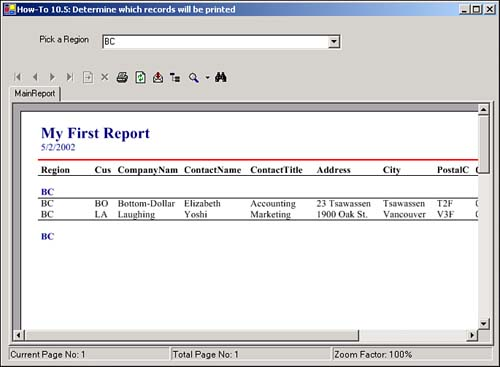

Tip
Take some time now to check out some of the other report options. |
I can use the Select Wizard to help limit the records that I want to be displayed on the report, but that doesn't do my users much good when they want control over that when the application is running. How do I determine which records are displayed at runtime?
To handle this, use the SelectionFormula of the CrystalReportsViewer. When you use the SelectionFormula to limit your records, you are taking advantage of Crystal Report's Database optimization. This means that the query you generated by setting the SelectionFormula and the original record source for the report will be "pushed down" to the server.
You can see the syntax for the SelectionFormula here:
CrystalReportViewer1.SelectionFormula = "{Table.Field} = value"
Value can be various data types, delimited by the usual delimiters, such as single quotes for strings.
For the new criteria to take effect, after setting the SelectionFormula, you need to call the RefreshReport method of the CrystalReportViewer.
To get optimal use out of the SelectionFormula, you need to keep some things in mind. You need to set an option of the report that will ensure it uses the record source indexes if possible.
To do this, you right-click on the report and choose Report Options from the Report menu. On the Options page, make sure to check Use Indexes or Server for Speed (see Figure 10.20).

Another tip is to make sure you use indexed fields whenever possible.
Tip
Take some time now to check out some of the other report options. |
Open and run the Visual Basic .NET-Chapter 10 solution. Click on the button labeled How-To 10.5. You can select Regions from the ComboBox control on the top of the form; the report then reflects the selection (see Figure 10.21).
Create a Windows Form.
Drag on a ReportDocument object, and set it to point to the report you created in How-To 10.1. Then name your report document rdHowTo10_5.
Place the controls shown in Figure 10.21 onto the form with the properties set in Table 10.4.
|
Object |
Property |
Setting |
|---|---|---|
|
Label |
Text |
Pick a Region |
|
ComboBox |
Name |
cboRegions |
|
CrystalReportViewer |
Name |
cvwRegionReport |
|
Anchor |
Top, Bottom, Right, Left |
|
|
ReportSource |
rdHowTo10_5 |
Add the code in Listing 10.3 into the Load event of the form. This code performs a DISTINCT SQL statement to get all of the regions used in the Customers table. The data adapter then fills dtRegions. Before binding dtRegions to the combo box cboRegions, a new data row is added to allow the user to specify All Regions.
Private Sub frmHowTo10_5_Load(ByVal sender As System.Object, _
ByVal e As System.EventArgs) Handles MyBase.Load
Dim odaRegions As New _
OleDb.OleDbDataAdapter("SELECT DISTINCT Region FROM Customers",
BuildCnnStr("(local)", "Northwind"))
Dim dtRegions As New DataTable()
odaRegions.Fill(dtRegions)
'-- Add the All Regions feature
Dim drAll As DataRow = dtRegions.NewRow
drAll(0) = "<< ALL Regions >>"
dtRegions.Rows.Add(drAll)
With Me.cboRegions
.DataSource = dtRegions
.ValueMember = "Region"
End With
End Sub
Note
As with a number of other examples, the BuildCnnStr() function has been created in the modGeneralRoutines module to create a connection string. |
Add the report in Listing 10.4 to the SelectedIndexChanged event of cboRegions. One of the values that is in the Region field of the Customer table is NULL. This code tests for that first by testing this:
Me.cboRegions.SelectedItem(0) Is System.DBNull.Value
If the selected item is NULL, which uses System.DBNull.Value for the comparison, then the value of IsNull({Customers.Region}) is stored in the SelectionFormula. If All Reasons was chosen, then the SelectFormula is set to the empty string so that all items are chosen. Otherwise, the Customers.Region field is compared to the literal region, supplied by cboRegions. The last task performed is refreshing the report.
Private Sub cboRegions_SelectedIndexChanged(ByVal sender As System.Object, _
ByVal e As System.EventArgs) _
Handles cboRegions.SelectedIndexChanged
With Me.cvwRegionReport
If Me.cboRegions.SelectedItem(0) Is System.DBNull.Value Then
.SelectionFormula = "IsNull({Customers.Region})"
ElseIf Me.cboRegions.SelectedItem(0) = "<< ALL Regions >>" Then
.SelectionFormula = ""
Else
.SelectionFormula = "{Customers.Region} = '" & _
Me.cboRegions.SelectedItem(0) & "'"
End If
.RefreshReport()
End With
End Sub

You can limit the selection displayed on the report in other ways, too. This How-To presented just one way to get you started. Letting your user choose the records gives him the perceived control he wants.